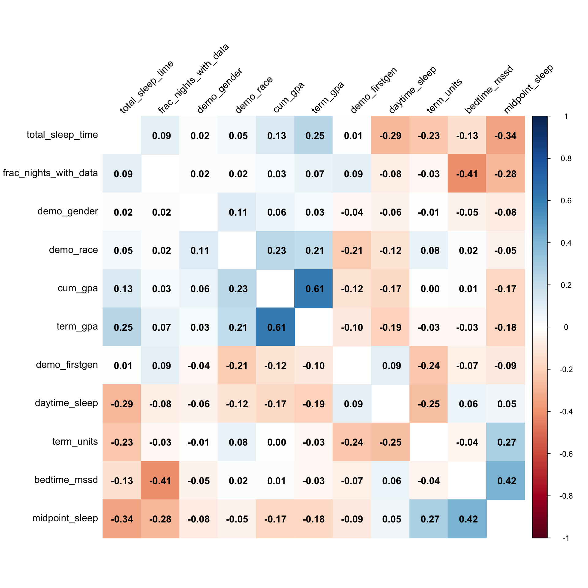
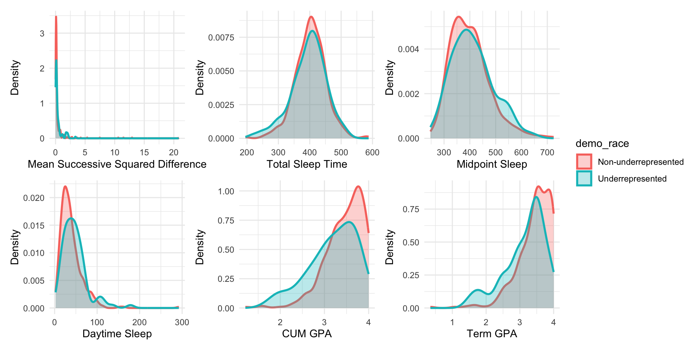
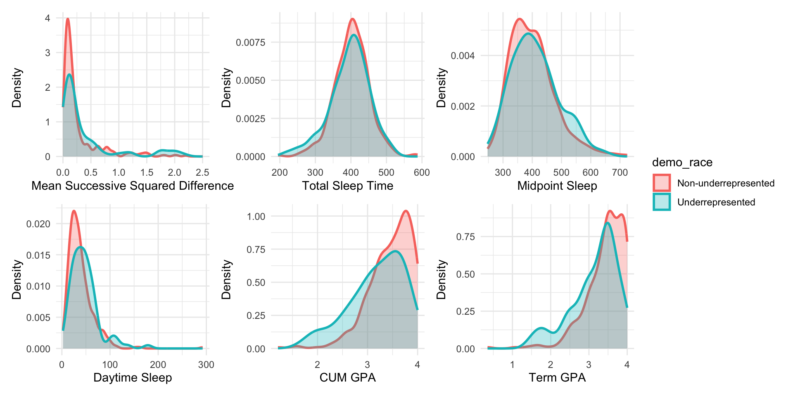

20241129_explore
Yuying Lu
2024-11-28
library(tidyverse)
theme_set(theme_minimal() + theme(legend.position = "bottom"))df_cum =
read_csv("data/cmu-sleep.csv") |>
janitor::clean_names() |>
drop_na()
df_cum## # A tibble: 481 × 15
## subject_id study cohort demo_race demo_gender demo_firstgen bedtime_mssd
## <dbl> <dbl> <chr> <dbl> <dbl> <dbl> <dbl>
## 1 185 5 lac1 1 1 0 0.117
## 2 158 5 lac1 0 1 0 0.142
## 3 209 5 lac1 1 1 0 1.53
## 4 102 5 lac1 0 1 1 0.130
## 5 174 5 lac1 1 1 0 0.130
## 6 184 5 lac1 1 1 0 0.209
## 7 255 5 lac1 1 1 0 0.675
## 8 265 5 lac1 1 1 0 0.130
## 9 343 5 lac1 1 0 0 1.48
## 10 137 5 lac1 1 1 0 0.0850
## # ℹ 471 more rows
## # ℹ 8 more variables: total_sleep_time <dbl>, midpoint_sleep <dbl>,
## # frac_nights_with_data <dbl>, daytime_sleep <dbl>, cum_gpa <dbl>,
## # term_gpa <dbl>, term_units <dbl>, zterm_units_zof_z <dbl>summary(df_cum)## subject_id study cohort demo_race
## Min. : 1.0 Min. :1.00 Length:481 Min. :0.000
## 1st Qu.:152.0 1st Qu.:2.00 Class :character 1st Qu.:1.000
## Median :302.0 Median :3.00 Mode :character Median :1.000
## Mean :289.9 Mean :2.94 Mean :0.817
## 3rd Qu.:418.0 3rd Qu.:5.00 3rd Qu.:1.000
## Max. :671.0 Max. :5.00 Max. :1.000
## demo_gender demo_firstgen bedtime_mssd total_sleep_time
## Min. :0.0000 Min. :0.0000 Min. : 0.004505 Min. :194.8
## 1st Qu.:0.0000 1st Qu.:0.0000 1st Qu.: 0.075134 1st Qu.:370.5
## Median :1.0000 Median :0.0000 Median : 0.142840 Median :402.9
## Mean :0.6133 Mean :0.2017 Mean : 0.478967 Mean :400.9
## 3rd Qu.:1.0000 3rd Qu.:0.0000 3rd Qu.: 0.324523 3rd Qu.:433.1
## Max. :1.0000 Max. :2.0000 Max. :20.849225 Max. :587.7
## midpoint_sleep frac_nights_with_data daytime_sleep cum_gpa
## Min. :247.1 Min. :0.2143 Min. : 2.269 Min. :1.210
## 1st Qu.:345.0 1st Qu.:0.7931 1st Qu.: 22.385 1st Qu.:3.160
## Median :393.1 Median :0.9310 Median : 34.679 Median :3.500
## Mean :401.9 Mean :0.8603 Mean : 40.059 Mean :3.413
## 3rd Qu.:442.7 3rd Qu.:1.0000 3rd Qu.: 50.889 3rd Qu.:3.770
## Max. :724.7 Max. :1.0000 Max. :292.304 Max. :4.000
## term_gpa term_units zterm_units_zof_z
## Min. :0.350 Min. : 5.00 Min. :-3.982521
## 1st Qu.:3.120 1st Qu.:15.00 1st Qu.:-0.604268
## Median :3.500 Median :17.00 Median : 0.041207
## Mean :3.384 Mean :29.42 Mean :-0.000448
## 3rd Qu.:3.790 3rd Qu.:48.00 3rd Qu.: 0.560271
## Max. :4.000 Max. :73.00 Max. : 4.055295df_cum = df_cum |>
filter(demo_firstgen!=2)
lm_fit = lm(cum_gpa ~ demo_race + demo_gender + demo_firstgen + bedtime_mssd + total_sleep_time + midpoint_sleep + daytime_sleep, data = df_cum)
summary(lm_fit)##
## Call:
## lm(formula = cum_gpa ~ demo_race + demo_gender + demo_firstgen +
## bedtime_mssd + total_sleep_time + midpoint_sleep + daytime_sleep,
## data = df_cum)
##
## Residuals:
## Min 1Q Median 3Q Max
## -2.23465 -0.23279 0.07746 0.31652 0.86550
##
## Coefficients:
## Estimate Std. Error t value Pr(>|t|)
## (Intercept) 3.6793826 0.2660297 13.831 < 2e-16 ***
## demo_race 0.2230181 0.0542572 4.110 4.66e-05 ***
## demo_gender 0.0196157 0.0420658 0.466 0.641208
## demo_firstgen -0.0961918 0.0524848 -1.833 0.067469 .
## bedtime_mssd 0.0323590 0.0153668 2.106 0.035751 *
## total_sleep_time 0.0002729 0.0004463 0.612 0.541095
## midpoint_sleep -0.0011921 0.0003078 -3.873 0.000123 ***
## daytime_sleep -0.0021778 0.0007927 -2.747 0.006240 **
## ---
## Signif. codes: 0 '***' 0.001 '**' 0.01 '*' 0.05 '.' 0.1 ' ' 1
##
## Residual standard error: 0.4437 on 472 degrees of freedom
## Multiple R-squared: 0.115, Adjusted R-squared: 0.1019
## F-statistic: 8.765 on 7 and 472 DF, p-value: 3.804e-10boot_straps =
df_cum|>
modelr::bootstrap(1000) |>
mutate(
strap = map(strap, as.tibble),
models = map(strap, \(df) lm(cum_gpa ~ demo_race + demo_gender + demo_firstgen + bedtime_mssd + total_sleep_time + midpoint_sleep + daytime_sleep, data = df)),
results = map(models, broom::tidy)
) |>
select(.id, results) |>
unnest(results)
boot_straps |>
group_by(term) |>
summarise(
boot_est = mean(estimate),
boot_se = sd(estimate),
boot_ci_ll = quantile(estimate, .025),
boot_ci_ul = quantile(estimate, .975),
)## # A tibble: 8 × 5
## term boot_est boot_se boot_ci_ll boot_ci_ul
## <chr> <dbl> <dbl> <dbl> <dbl>
## 1 (Intercept) 3.67 0.261 3.16 4.17
## 2 bedtime_mssd 0.0303 0.0142 0.00328 0.0533
## 3 daytime_sleep -0.00215 0.000694 -0.00351 -0.000816
## 4 demo_firstgen -0.0948 0.0499 -0.194 -0.000699
## 5 demo_gender 0.0193 0.0423 -0.0579 0.103
## 6 demo_race 0.223 0.0644 0.0995 0.350
## 7 midpoint_sleep -0.00118 0.000319 -0.00178 -0.000590
## 8 total_sleep_time 0.000276 0.000447 -0.000592 0.00114Visualization
library(corrplot)
cor_matrix <- cor(df_cum[4:14])
corrplot(cor_matrix, method = "color",
addCoef.col = "black",
tl.col = "black",
tl.srt = 45,
order = 'hclust',
diag = F) 
plot_df = df_cum |>
mutate(demo_race = case_match(demo_race,
0 ~ "Underrepresented",
1~ "Non-underrepresented"),
demo_race = factor(demo_race),
demo_gender = case_match(demo_gender,
0 ~ "Male",
1~ "Female"),
demo_gender = factor(demo_gender),
demo_firstgen = case_match(demo_firstgen,
0 ~ "Non-firstgen",
1~ "Firstgen"),
demo_firstgen = factor(demo_firstgen)
)
# Process data: Rename and calculate proportions
plot_race =
plot_df |>
group_by(demo_race) |>
ggplot(aes(x = demo_race, fill = demo_race, color = demo_race)) +
geom_bar(position = "dodge" ,alpha = 0.3, linewidth = 1) +
labs(x = "Race", y = "Count") +
theme_minimal() +
theme(
strip.text = element_text(size = 14),
plot.title = element_text(size = 16, face = "bold", hjust = 0.5),
legend.position = "bottom"
)
# Process data: Rename and calculate proportions
plot_gender =
plot_df |>
group_by(demo_gender) |>
ggplot(aes(x = demo_gender, fill = demo_gender, color = demo_gender)) +
geom_bar(position = "dodge" ,alpha = 0.3, linewidth = 1) +
labs(x = "Gender", y = "Count") +
theme_minimal() +
theme(
strip.text = element_text(size = 14),
plot.title = element_text(size = 16, face = "bold", hjust = 0.5),
legend.position = "bottom"
)
plot_firstgen =
plot_df |>
group_by(demo_firstgen) |>
ggplot(aes(x = demo_firstgen, fill = demo_firstgen, color = demo_firstgen)) +
geom_bar(position = "dodge" ,alpha = 0.3, linewidth = 1) +
labs(x = "Firstgen", y = "Count") +
theme_minimal() +
theme(
strip.text = element_text(size = 14),
plot.title = element_text(size = 16, face = "bold", hjust = 0.5),
legend.position = "bottom")
library(patchwork)
plot_race + plot_gender + plot_firstgen + plot_layout(nrow =1) 
# Mean successive squared difference of bedtime.
plot_bedtime = plot_df |>
ggplot(aes(x = bedtime_mssd,fill = demo_race, color = demo_race)) +
geom_density(alpha = 0.3, linewidth = 1) +
labs(x = "Mean Successive Squared Difference", y = "Density") +
theme_minimal() +
theme(
strip.text = element_text(size = 14),
plot.title = element_text(size = 16, face = "bold", hjust = 0.5)
)
plot_bedtime2 = plot_df |>
ggplot(aes(x = bedtime_mssd,fill = demo_race, color = demo_race)) +
geom_density(alpha = 0.3, linewidth = 1) +
labs(x = "Mean Successive Squared Difference", y = "Density") +
xlim(c(0,2.5))+
theme_minimal() +
theme(
strip.text = element_text(size = 14),
plot.title = element_text(size = 16, face = "bold", hjust = 0.5)
)
plot_totalsleep = plot_df |>
ggplot(aes(x = total_sleep_time ,fill = demo_race, color = demo_race)) +
geom_density(alpha = 0.3, linewidth = 1) +
labs(x = "Total Sleep Time", y = "Density") +
theme_minimal() +
theme(
strip.text = element_text(size = 14),
plot.title = element_text(size = 16, face = "bold", hjust = 0.5)
)
plot_midpoint = plot_df |>
ggplot(aes(x = midpoint_sleep,fill = demo_race, color = demo_race)) +
geom_density(alpha = 0.3, linewidth = 1) +
labs(x = "Midpoint Sleep", y = "Density") +
theme_minimal() +
theme(
strip.text = element_text(size = 14),
plot.title = element_text(size = 16, face = "bold", hjust = 0.5)
)
plot_daysleep = plot_df |>
ggplot(aes(x = daytime_sleep,fill = demo_race, color = demo_race)) +
geom_density(alpha = 0.3, linewidth = 1) +
labs(x = "Daytime Sleep", y = "Density") +
theme_minimal() +
theme(
strip.text = element_text(size = 14),
plot.title = element_text(size = 16, face = "bold", hjust = 0.5)
)
plot_cumgpa = plot_df |>
ggplot(aes(x = cum_gpa,fill = demo_race, color = demo_race)) +
geom_density(alpha = 0.3, linewidth = 1) +
labs(x = "CUM GPA", y = "Density") +
theme_minimal() +
theme(
strip.text = element_text(size = 14),
plot.title = element_text(size = 16, face = "bold", hjust = 0.5)
)
plot_termgpa = plot_df |>
ggplot(aes(x = term_gpa,fill = demo_race, color = demo_race)) +
geom_density(alpha = 0.3, linewidth = 1) +
labs(x = "Term GPA", y = "Density") +
theme_minimal() +
theme(
strip.text = element_text(size = 14),
plot.title = element_text(size = 16, face = "bold", hjust = 0.5)
)plot_bedtime + plot_totalsleep + plot_midpoint + plot_daysleep + plot_cumgpa + plot_termgpa + plot_layout(ncol = 3,guides = "collect") & theme(legend.position = "right") 
plot_bedtime2 + plot_totalsleep + plot_midpoint + plot_daysleep + plot_cumgpa + plot_termgpa + plot_layout(ncol = 3,guides = "collect" ) & theme(legend.position = "right") 